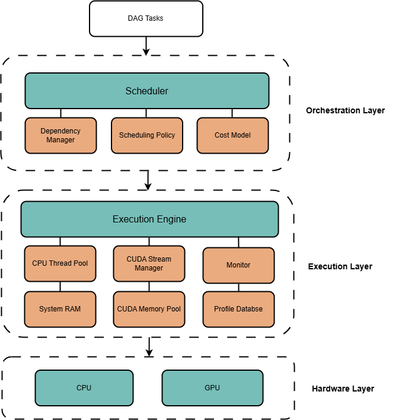

Summary
We propose to develop an intelligent Task Scheduler for Directed Acyclic Graphs (DAGs) that optimizes execution across heterogeneous CPU and GPU resources. The core objective is to minimize the total completion time of complex task sets by balancing computational speedups against data transfer overheads. We will implement a custom cost model that estimates task duration based on computational workload, data size, CPU/GPU processing rates, and PCIe bandwidth to make informed scheduling decisions.Background
DAGs are the standard abstraction for managing task dependencies in high-performance computing. They are essential in Data Analytics (e.g., Spark), Model Training Pipeline , and Scientific Computing for managing large-scale simulation workflows. By modeling execution as a DAG, systems can identify independent tasks that can be executed in parallel while respecting strict synchronization constraints.
Modern performance gains rely on combining the low-latency control logic of CPUs with the massive data-parallel throughput of GPUs. Heterogeneous systems provide superior Performance-per-Watt and higher peak TFLOPS, but they introduce a "communication vs. computation" trade-off. An intelligent scheduler is required to decide when the acceleration on a GPU outweighs the PCIe transfer latency of moving data from CPU memory.
Feature
Architecture

Scheduler: determines the execution device based on current workload.
DependencyManager: Dynamically decrements the in-degree of tasks at runtime; triggers a task to be "Ready" once its in-degree reaches zero.
SchedulingPolicy: implements the scheduling policy to determine the execution device for each task.
ExecutionEngine: The physical executor; wraps tasks into std::future objects to run within the CPU thread pool or GPU streams.
CPUThreadPool: manages a pool of CPU threads to execute tasks concurrently on the CPU.
SystemRAM: manages the allocation and deallocation of memory (RAM) for tasks running on the CPU.
MemoryPool: re-allocates large blocks of video memory (VRAM).
StreamManager: manages GPU streams to enable concurrent execution of multiple tasks on the GPU.
System Design
Architecture